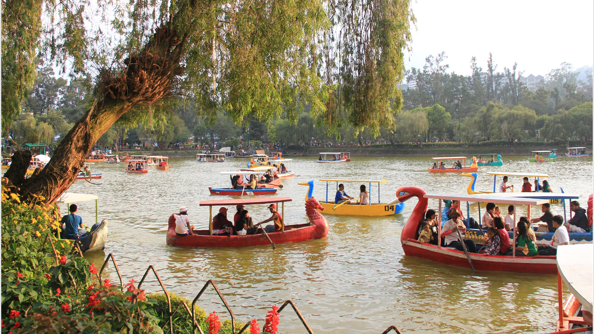
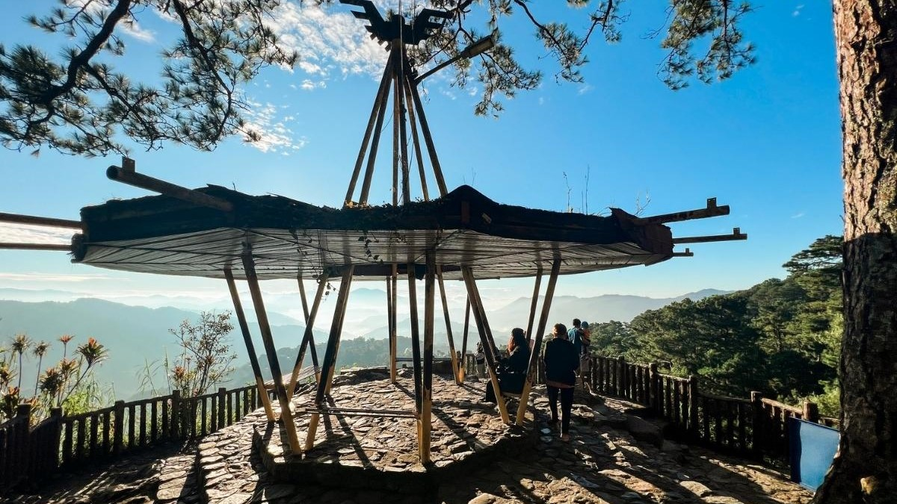
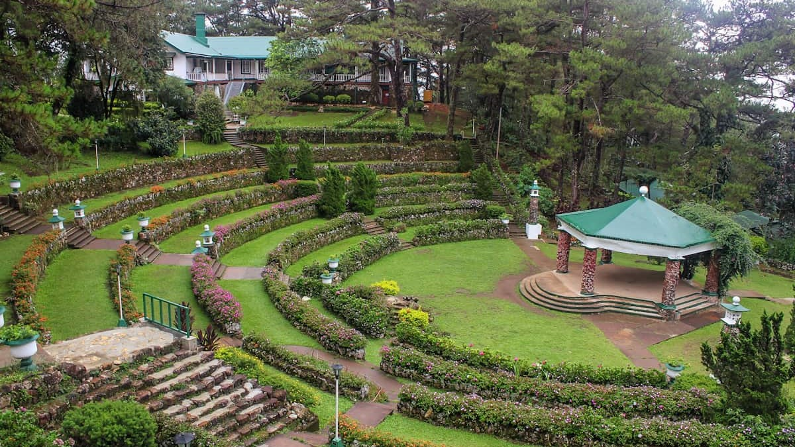
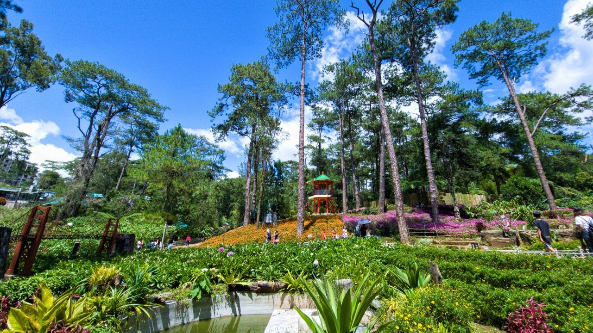
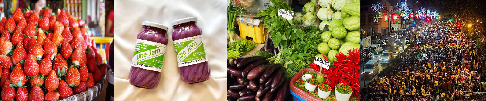

Welcome
Welcome to my travel page! This simple website highlights one of my favorite destinations in the Philippines. Explore its tourist attractions, food, and how to reach the city.
Top Attractions
- Burnham Park 
- Mines View Park 
- Camp John Hay 
- Botanical Garden 
Famous Local Food
Baguio is known for its strawberries, ube jam, and fresh vegetables. Visitors often enjoy local treats at the Baguio Public Market and night markets.
Contact Information
For more information, visit: Baguio City Official Website
Email: info@baguio-tourism.ph